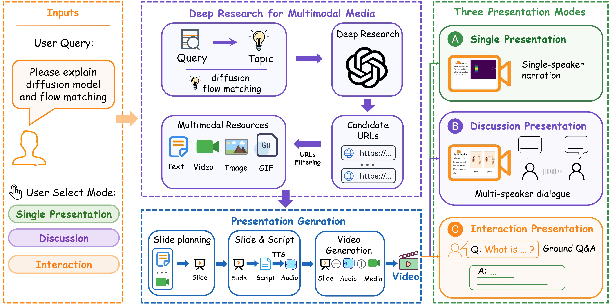
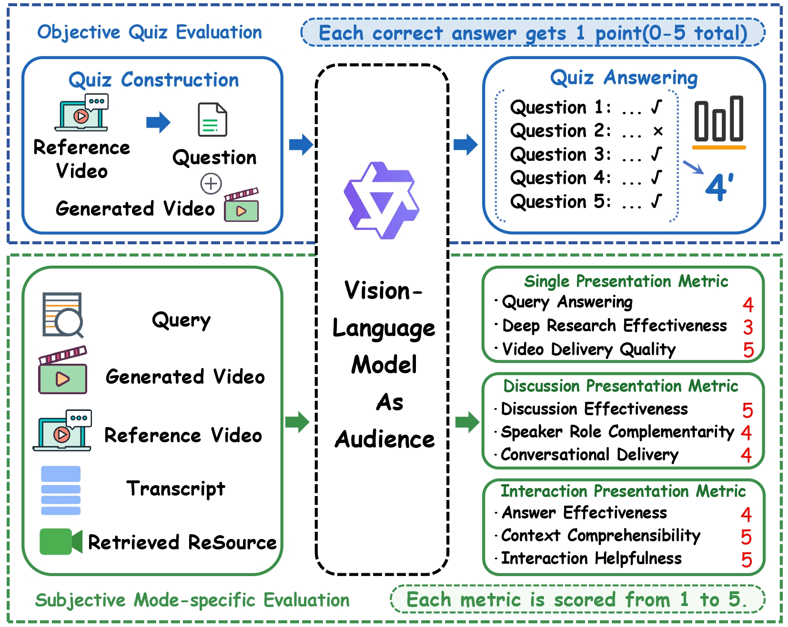

The video was generated entirely by PresentAgent-2 without any manual curation.
FastForward
K-Planes
RDRF
BANMo
CoWVLA
GenMimic
Speculative Decoding
Chain of World

Overview of the PresentAgent-2 framework. Given a user query and a selected presentation mode, PresentAgent-2 first performs deep research to collect multimodal resources, then constructs presentation content, and finally generates a presentation video in single presentation, discussion, or interaction mode.

Evaluation pipeline. Objective quiz evaluation measures knowledge delivery, while subjective evaluation scores mode-specific presentation quality.
| Method | Presentation | Discussion | Interaction | Text | Image | GIF | Video |
|---|---|---|---|---|---|---|---|
| Paper2Video | ✓ | × | × | ✓ | ✓ | × | △ |
| Paper2Poster | △ | × | × | ✓ | ✓ | × | × |
| VideoDirectorGPT | × | × | × | △ | × | × | ✓ |
| VideoStudio | × | × | × | △ | × | × | ✓ |
| LVD | × | × | × | △ | × | × | ✓ |
| PresentAgent | ✓ | × | × | ✓ | △ | × | ✓ |
| PresentAgent-2 | ✓ | ✓ | ✓ | ✓ | ✓ | ✓ | ✓ |
@article{wu2025presentagent2,
title={PresentAgent-2: Towards Generalist Multimodal Presentation Agents},
author={Wu, Wei and Xu, Ziyang and Zhang, Zeyu and Zhao, Yang and Tang, Hao},
journal={Tech Report},
year={2026},
}